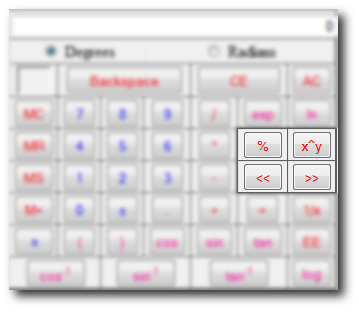

Now we discuss power functions. Look at the picture below for a list of the power function buttons:

Modulo Operator
The modulo operator (also called the percent operator or %) divides the number on the left of the operator by the number on the right and the result is the remainder.
Take 5/3 for example. Three goes into five one time with a remainder of two. So 5%3 = 2.
Take 12/4 for example. Four goes into twelve three times with a remainder of zero. So 12%4 = 0.
Examples of "x^y" functions:
The power function is the x^y button. Some may get confused as to how this works because when they click it what appears in the Display is "^" without quotes. This is actually just an easy way for you to write an equation and a feature not common to JavaScript based calculators.
x^y is the same thing as XY.
23=8 is the same as 2^3=8
Putting it in a more complex equation is no problem either:
4(23+4)=48 which is like 4*(2^3+4)
To take the root of an equation remember that the exponent must be a fraction. Square root would be x^(1/2), cube root would be x^(1/3), and so on.
Don't forget the a symbol goes between 2 algebraic functions like (8)*(8)
Also all parenthesis have to be closed in order for any function to work
Bitwise Operations
There are two shift operations. Shift left (x<<y) and shift right (x>>y). Essentially this is the same thing as multiplying or dividing the x by 2y
For example 5<<2 is the same as 5*2^2 = 20. In binary it would be 00101<<2 = 10100 which is 20. The same can be said for 20>>2 which is 20/(2^2). In binary it would be 10100>>2 = 00101 which is 5.